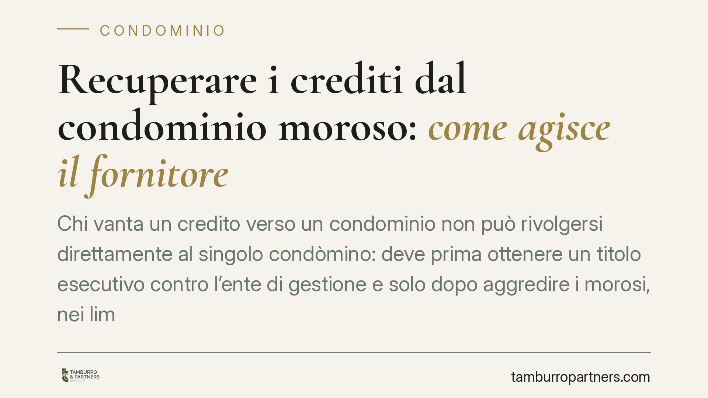

Recuperare i crediti dal condominio moroso: come agisce il fornitore
Chi vanta un credito verso un condominio non può rivolgersi direttamente al singolo condòmino: deve prima ottenere un titolo esecutivo contro l'ente di gestione e solo dopo aggredire i morosi, nei limiti della loro quota. Un principio confermato dalla giurisprudenza di merito, che incide sulle strategie di recupero di imprese e professionisti fornitori.

Il caso: quando il condominio non paga
Una ditta appaltatrice esegue lavori sulle parti comuni. L'amministratore raccoglie solo una parte delle quote perché alcuni condòmini sono morosi. Il fornitore resta scoperto e si chiede: posso agire direttamente contro chi non ha pagato?
La risposta richiede di distinguere due piani: il rapporto tra fornitore e condominio (l'ente di gestione) e il rapporto tra condominio e singoli condòmini. Il Tribunale di Napoli, in una recente pronuncia, ha ribadito l'ordine da rispettare: prima il titolo contro il condominio, poi l'aggressione dei morosi in fase esecutiva.
Inquadramento normativo
Il riferimento è l'art. 63 disp. att. c.c., come modificato dalla L. 220/2012 (riforma del condominio). La norma prevede che i creditori del condominio, per la parte del credito non soddisfatta, non possono agire nei confronti dei condòmini in regola con i pagamenti se non dopo l'escussione degli altri condebitori, cioè dei condòmini morosi.
Si tratta di un beneficio di preventiva escussione: il fornitore deve prima tentare il recupero verso chi non ha pagato la propria quota, e solo se questo non basta può rivolgersi ai condòmini in regola.
A monte opera il principio fissato dalle Sezioni Unite (Cass. SU n. 9148/2008): le obbligazioni condominiali sono parziarie e non solidali. Ogni condòmino risponde solo nei limiti della propria quota millesimale, non dell'intero debito.
Come si coordinano parziarietà ed escussione
I due principi non si contraddicono, ma operano in fasi diverse.
La parziarietà stabilisce il *quanto*: nessun condòmino può essere costretto a pagare più della propria quota. Il beneficio di escussione stabilisce il *quando* e il *contro chi*: prima l'ente, poi i morosi, infine — in via residuale — i condòmini in regola per la sola parte non recuperata dai morosi.
In concreto: il creditore ottiene un titolo esecutivo contro il condominio, poi in sede esecutiva individua i singoli obbligati e agisce contro ciascuno nei limiti dei suoi millesimi, partendo dai morosi.
Il ruolo dell'amministratore
L'amministratore è lo snodo informativo decisivo. È lui a detenere l'anagrafe condominiale, lo stato dei pagamenti e i dati per individuare i morosi e le rispettive quote millesimali.
L'art. 63 disp. att. c.c. impone all'amministratore, su richiesta di chi ha un interesse serio e concreto, di comunicare i dati dei condòmini morosi. Per il fornitore è il primo passo per costruire un'azione esecutiva efficace: senza conoscere chi non ha pagato e in che misura, l'escussione preventiva resta sulla carta.
Implicazioni pratiche per il fornitore
Chi contratta con un condominio deve mettere in conto tempi e passaggi ulteriori rispetto a un normale recupero crediti verso un soggetto singolo:
- non esiste una scorciatoia verso il condòmino "solvibile": la legge nega tale possibilità finché non sono stati escussi i morosi;
- il titolo va formato contro il condominio, non contro i singoli;
- il recupero effettivo dipende dalla capienza dei morosi e, in subordine, dei condòmini in regola per la sola quota residua.
Questo rende cruciale la fase contrattuale: le tutele si costruiscono prima, non dopo.
Cosa fare in concreto
- Richiedete all'amministratore i dati sui morosi ai sensi dell'art. 63 disp. att. c.c.: nomi, quote millesimali e stato dei pagamenti, per pianificare l'esecuzione.
- Ottenete il titolo esecutivo contro il condominio (decreto ingiuntivo o sentenza) prima di ipotizzare qualsiasi azione verso i singoli.
- In fase esecutiva, aggredite prima i condòmini morosi nei limiti delle rispettive quote; solo per la parte non soddisfatta valutate l'azione verso quelli in regola.
- In sede contrattuale, negoziate garanzie: acconti alla firma, pagamenti a stato avanzamento lavori (SAL), eventuali fideiussioni o clausole di sospensione delle prestazioni in caso di inadempimento.
- Verificate la delibera condominiale che autorizza l'incarico e la copertura di spesa: una delibera regolare rafforza la posizione del creditore.
Una pianificazione accurata riduce il rischio di crediti incagliati e accorcia i tempi di recupero. Consigliamo di intervenire già nella redazione del contratto, quando il margine di tutela è massimo.
---
*Contributo informativo a cura di Tamburro & Partners Avvocati - Avv. Giuseppe Tamburro. Non costituisce parere legale.*
Ogni condominio ha una storia a sé.
Se gestisci un'amministrazione e vuoi un confronto su una specifica questione condominiale, scrivi allo studio. Ti rispondiamo entro un giorno lavorativo.